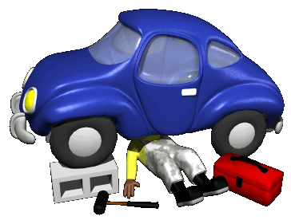

La Seguridad no tiene precio pero si tiene nombre, Servi Independencia
En Servi Independencia somos un taller mecánico especialista en mantener su vehículo como el primer día. Disponemos de las mejores instalaciones, la más alta tecnología y el mejor equipo humano de todo Tucumán.
Nuestros servicios se dividen en:
No lo dudes, navega por nuestra página y ponte en contacto con nosotros para cualquier duda que te surja.
